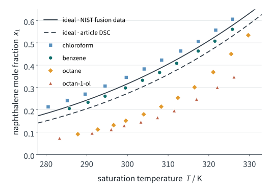
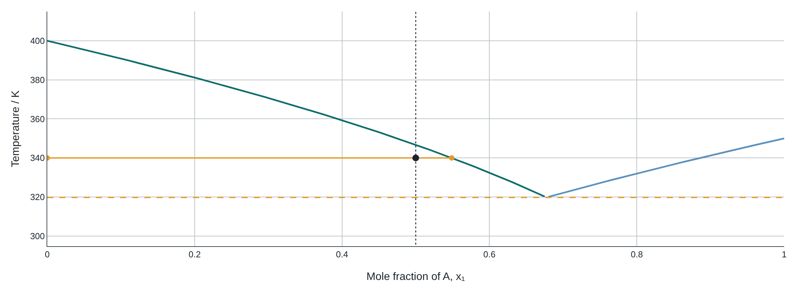
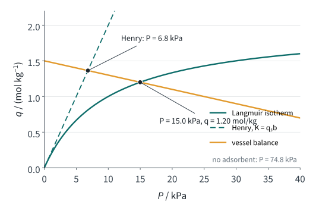
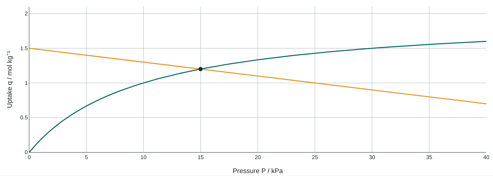

Session 4 of 7 · 180 minutes
Before the midterm · 7 sessions P1 · Framework P2 · PVT and equations of state P3 · Residual properties P4 · Pure-component equilibrium and fugacity P5 · Mixtures P6 · Excess properties and activity P7 · Choosing a property model
After the midterm · 7 sessions 1 · VLE and flash 2 · Experimental VLE and consistency 3 · Liquid stability and LLE 4 · Solids and adsorption 5 · Chemical equilibrium 6 · Electrochemical equilibrium 7 · Choosing a model from evidence
Sessions 1–3 balanced fluid phases against each other. Today one phase is a pure solid: a crystal in a solution, or a surface that holds gas. Equal chemical potential still decides, and the solid gives a fixed reference.

Naphthalene at about 299.5 K dissolves to x₁ = 0.345 in chloroform, 0.298 in benzene, 0.151 in octane and 0.129 in octan-1-ol.
The ideal solubility depends only on the solid, yet two published fusion data sets put it at 0.27 or 0.31.
A crystallizer design needs both: the solid’s fusion data and the liquid’s γ₁. An error in one is absorbed by the other when you fit.
Data: Xu et al., J. Chem. Eng. Data 64 (2019) 3018–3027, via NIST ThermoML; molality converted to mole fraction. Lab 10 E uses them.
Sessions 1–3 Equal fugacity between fluid phases whose compositions are unknown.
x_i^{\alpha}\gamma_i^{\alpha}=x_i^{\beta}\gamma_i^{\beta}
Today · solid–liquid The solid is pure: its fugacity depends on T only.
x_1\gamma_1f_1^{\text{l,pure}}=f_1^{\text{s}}
Today · gas–surface The adsorbed amount follows an isotherm, and the vessel balance closes the problem.
n=\frac{PV}{RT}+m\,q(P,T)
Where you show it
0–30 Essential concepts solubility, fusion data, eutectic, isotherms
30–40 Activity 1 above or below ideal?
40–60 Demo Lab 11
60–70 Break
70–140 Activity 2 · pair investigation Lab 11 heat, then Lab 10 E with your own code
140–180 Discussion and exit ticket what a fitted parameter absorbs
Session question When a model fits measured solubility well, which errors has its parameter quietly absorbed, and which predictions survive?
Before class · 15–20 min Read the note on solids in liquids and gases on surfaces. Answer its three questions.
After class · 30–40 min Finish Lab 10 E and Lab 11 A–B, and submit both study files with your name and ID.
Studying on your own? Follow the same order. Turn on narration or captions at the bottom left, and pause at each activity slide.
A path through the melting point gives
\begin{aligned}\ln(x_1\gamma_1)={}&-\frac{\Delta_{\text{fus}}H}{R}\Big(\frac{1}{T}-\frac{1}{T_m}\Big)\\&+\frac{\Delta C_p}{R}\Big(\frac{T_m}{T}-1-\ln\frac{T_m}{T}\Big)\end{aligned}
With γ₁ = 1: the ideal solubility. It depends on the solid alone. Every solvent that differs from it does so through γ₁.
Assumptions, and when they fail
| Assumption | Fails when |
|---|---|
| pure solid, no solid solution | similar molecules co-crystallize |
| one crystal form | a polymorph or solvate forms |
| ΔCp term neglected | T is far below Tm |
ΔCp = Cpliquid − Cpsolid of pure 1. Today: naphthalene, 279–330 K, Tm ≈ 353 K. The ΔCp term is neglected throughout.
Naphthalene · two sources
| Tm / K | ΔfusH / kJ mol⁻¹ | ideal x₁, 298.15 K | |
|---|---|---|---|
| NIST WebBook | 353.39 | 19.0 | 0.302 |
| Article, DSC | 355.04 ± 2.1 | 20.87 ± 2.1 | 0.260 |
NIST: triple point, average of 6 values; ΔfusH from Chirico, Knipmeyer et al. (2002). Article: Xu et al. (2019), expanded uncertainty at 95 %.
At 298.15 K, each 1 kJ/mol in ΔfusH moves ln x₁ by 0.063.
The two sets differ by 1.9 kJ/mol and 1.65 K. The ideal solubility differs by 16 %.
That difference passes, unchanged, into every γ₁ you infer from a measured solubility. Choose the fusion data before you interpret γ₁, and say which you used.
The data come as molality, m in mol per kg of solvent:
x_1=\frac{m}{m+1000/M_{\text{solvent}}}\quad \gamma_1=\frac{x_1^{\text{id}}(T)}{x_1}
Octane, 296.6 K, m = 1.3217: x₁ = 0.1312. With NIST fusion data, x₁id = 0.290, so γ₁ = 2.21.
A model such as ln γ₁ = (W/RT)x₂² puts x₁ on both sides. Solve for x₁; do not evaluate γ₁ once.
Fitted W, least squares in ln x₁, all rows
| Solvent | W (NIST) | W (DSC) | x₁ at 298.15 K |
|---|---|---|---|
| octane | 2509 | 1973 | 0.144 / 0.145 |
| octan-1-ol | 2979 | 2475 | 0.119 / 0.120 |
| benzene | +238 | −522 | 0.287 / 0.289 |
W in J/mol. The prediction hardly moves with the fusion data; the parameter does.

Two liquidus curves Each solid has its own solubility curve from the same equation. They meet at the eutectic: liquid with both solids.
Phase rule Binary at fixed P with three phases: F = 2 − 3 + 1 = 0. The eutectic T and composition are fixed.
Lab 10, ideal liquid Feed z₁ = 0.5: first crystals of B at 346.7 K; eutectic at 319.8 K, x₁ = 0.677. Teaching parameters, not a real pair.
Activity 1 · 10 minutes · alone, then with a partner
Naphthalene in benzene: m = 4.5226 mol/kg saturates at 294.5 K (M = 78.112 g/mol). Find x₁. Then find γ₁ with each fusion data set: NIST (353.39 K, 19.0 kJ/mol) and DSC (355.04 K, 20.87 kJ/mol).
Is the deviation from ideal positive or negative? What would you report as the answer?
On your own: pause here and write your answer. In place of a partner, compare it with the next slide and write one sentence on any difference and its cause.
x₁ = 4.5226 / (4.5226 + 1000/78.112) = 0.2610
| Fusion data | x₁id(294.5 K) | γ₁ | sign |
|---|---|---|---|
| NIST | 0.274 | 1.051 | positive |
| DSC | 0.234 | 0.896 | negative |
Fitting all ten rows: W = +238 J/mol (NIST) or −522 J/mol (DSC).
The sign of the deviation is not decided by these data. It is decided by the fusion data, which differ by about their own stated uncertainty.
What you can report: naphthalene + benzene is close to ideal, |ln γ₁| ≤ 0.11 here, and the solubility at 298.15 K is 0.287–0.289 with either set.
To settle the sign, measure ΔfusH more precisely, or use a property that does not pass through the solid, such as HE of the liquid.

q=\frac{q_sK_LP}{1+K_LP}\qquad n=\frac{PV}{RT}+m\,q(P)
Lab 11 starting case 1 L, 20 g, 0.03 mol, 300 K, qs = 2 mol/kg, KL = 0.1 kPa⁻¹: P = 15.0 kPa, q = 1.20 mol/kg, 80 % of the gas on the solid.
Henry, KH = qsKL Same slope at P → 0, but no saturation: 6.8 kPa. Without adsorbent: 74.8 kPa.
At fixed loading q:
\Big(\frac{\partial\ln P}{\partial(1/T)}\Big)_q=-\frac{Q_{\text{st}}}{R}
Heating the closed vessel from 300 to 400 K (Qst = 25 kJ/mol): q falls from 1.20 to 0.64 mol/kg, P rises from 15.0 to 57.4 kPa, and 0.011 mol leaves the solid.
Lab 11 B · synthetic isotherms, true Qst = 25 kJ/mol
| Isotherms used | Qst / kJ mol⁻¹ |
|---|---|
| 300, 320, 340 K | 25.1 |
| 300, 340 K | 25.1, linearity untested |
| 340 K recorded as 342 K | 24.1 |
A 2 K error in one temperature moves the heat by 1 kJ/mol.

Lab 11 should report · starting case P = 14.99 kPa · q = 1.20 mol/kg · coverage θ = q/qs = 0.60 · 80 % adsorbed · 74.83 kPa without adsorbent · balance residual 0
Using molality as a mole fraction. m = 1.32 mol/kg in octane is x₁ = 0.131, not 1.32.
ΔfusH in kJ/mol inside exp(−ΔH/RT). The ideal solubility becomes about 1 for any T.
Evaluating γ₁ once at infinite dilution. γ₁ depends on x₁: solve the implicit equation.
Using a Henry constant outside its fitted range. It cannot saturate, so it predicts too much uptake.
You decide
The assistant may
Write and debug code that does exactly what your specification says. Not property values or conclusions.
Lab 10 step E recomputes from the measured data:
It also refits with the other fusion data, for the discussion.
Next Activity 2: a pair investigation in Labs 11 and 10, 70 minutes.
Before you leave your seat, check that both labs open on your device.
Activity 2 · 70 minutes · in pairs: one drives the lab, one checks by hand, then swap
15 min · by hand Octane, 296.6 K, m = 1.3217: x₁, then γ₁ with both fusion data sets.
20 min · Lab 11 A–B Fit-range study, then Qst from three isotherms and with one T mislabeled. Save the study.
25 min · Lab 10 E your own code One solvent, one fusion data set. Specify, ask an AI assistant for the code, run it, check it in E. Fix what disagrees.
10 min · explain Two sentences with numbers: why does W change by hundreds of J/mol with the fusion data while x₁ at 298.15 K hardly moves?
On your own: do both roles yourself: work in the labs, then check one value by hand before you trust it. Pause the slides while you work; the next slide lists what to hand in.
Graduate extension Fit octane with W = a + b/T in place of a constant. Does the RMSE in ln x₁ fall below 0.02, and does the 298.15 K prediction change?
Check your results · octane
| NIST | DSC | |
|---|---|---|
| ideal x₁, 298.15 K | 0.3018 | 0.2595 |
| x₁ at 296.6 K | 0.1312 | 0.1312 |
| γ₁ at 296.6 K | 2.210 | 1.892 |
| W / (J mol⁻¹) | 2509 | 1973 |
| RMSE in ln x₁ | 0.044 | 0.060 |
| x₁ at 298.15 K | 0.1437 | 0.1450 |
Octane, NIST fusion data · a first-draft script
| Lab | Script | |
|---|---|---|
| ideal x₁, x₁ and γ₁ of the row | agree | agree |
| W / (J mol⁻¹) | 2509 | 2540 |
| RMSE in ln x₁ at the script’s W | 0.045 | 0.028 |
| x₁ at 298.15 K, script’s W | 0.142 | 0.108 |
The script fitted ln γ₁ in place of ln x₁ (+5.9 % in the objective), computed its RMSE with the measured x₁ inside γ₁, and predicted with γ₁ at x₂ = 1. The prediction was 24 % low.
Fix that made all checks agree
Solve ln x₁ + (W/RT)(1 − x₁)² = −(ΔfusH/R)(1/T − 1/Tm) for x₁ at every T, in the fit, the RMSE and the prediction.
The draft’s RMSE looked better than the correct one. A small error from code that computed the wrong thing is not evidence.
All checks agree only shows that the code solves your problem. Constant W still leaves 0.044 in ln x₁ for octane.
Discuss in pairs, then with the class. On your own: write two or three sentences for each question.
Solid–liquid ln(x₁γ₁) = −(ΔfusH/R)(1/T − 1/Tm). The fusion data set the ideal baseline; γ₁ carries the solvent.
Gas–surface Isotherm plus vessel balance gives P and q. Qst comes from ln P against 1/T at fixed q, and is sensitive to T errors.
Parameters A fitted W absorbs errors in the fusion data. Report it with the data it was fitted with; trust predictions inside the fitted range.
Session question: for naphthalene in benzene, two fusion data sets give W = +238 and −522 J/mol and the same x₁ = 0.287–0.289 at 298.15 K. The parameter absorbed the 16 % difference in ideal solubility; the interpolated prediction survived.
Next session How far does a reaction go, and what does a nonideal phase do to K? Chemical equilibrium (Lab 12).
Exit ticket and feedback · alone · 5 minutes · anonymous
Two fusion data sets give W = +238 and −522 J/mol for naphthalene in benzene, and the same solubility at 298.15 K. What can you report about the liquid nonideality, and what can you not?
Scan the code or open the link. The same form asks three short questions about today: pace, confidence and whether the lab worked.
No name or student ID is recorded. Wait for “Response received.”
Hand in · this week Lab 10 study file with E, and Lab 11 study file with A and B. Names and student IDs. Upload each to myCourseVille, in the assignment for that lab.
Prepare · Session 5 Read the Session 5 pre-class note. About 20 minutes.
Optional · graduate Lab 11 C: how much gas does heating release, and how does it depend on Q? Lab 10 C: sensitivity to the fusion data.
Open Lab 10 in the Graduate view →
Starts at Lab 10 E. Measured solubility: first button Download the measured solubility (CSV). For Lab 11 A and B, open Lab 11 in the Graduate view: first button Run the fit-range study.